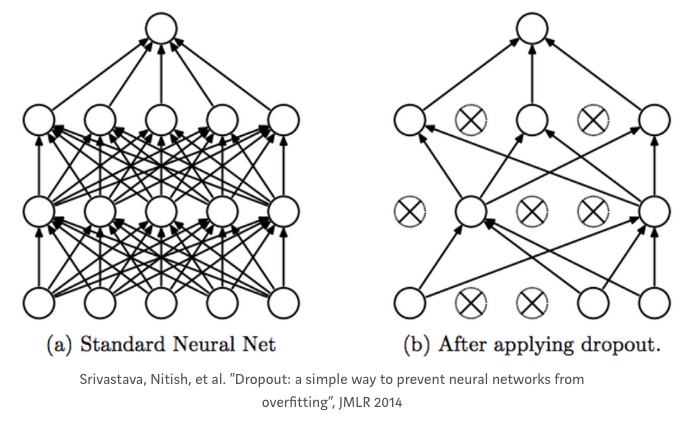
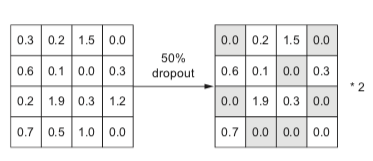
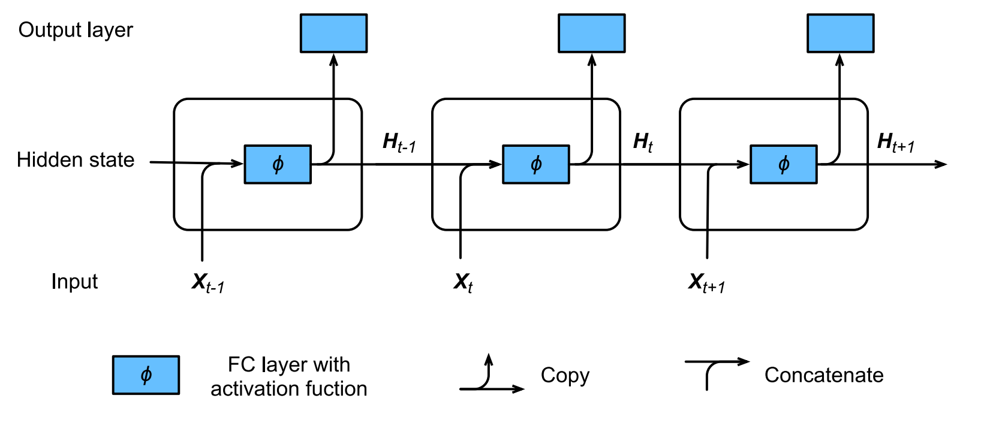
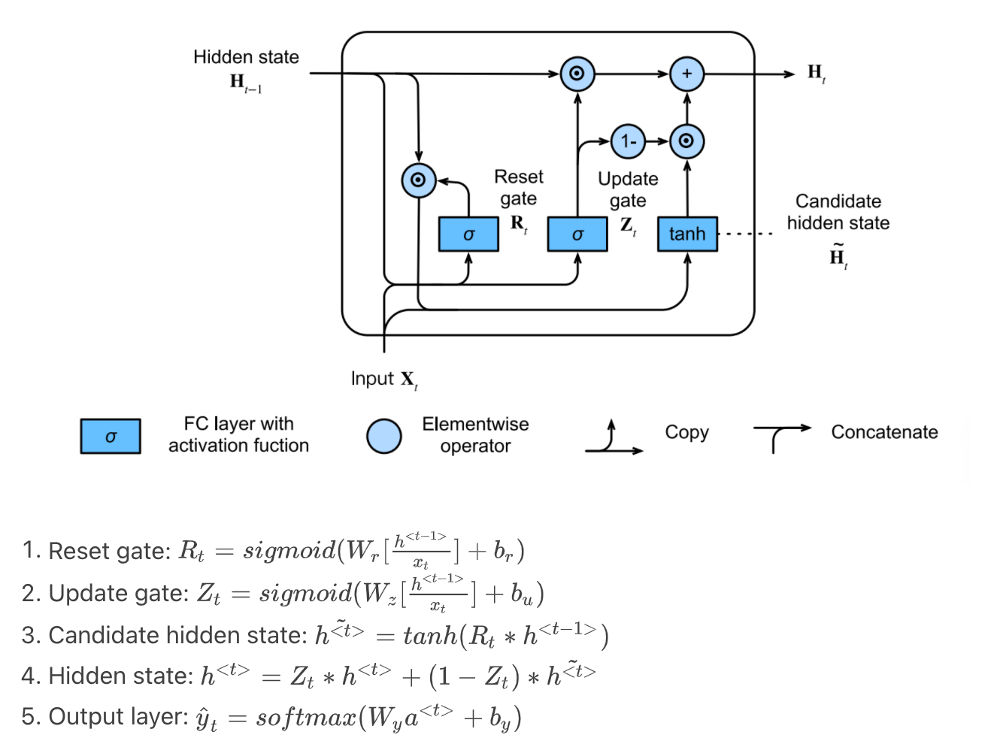
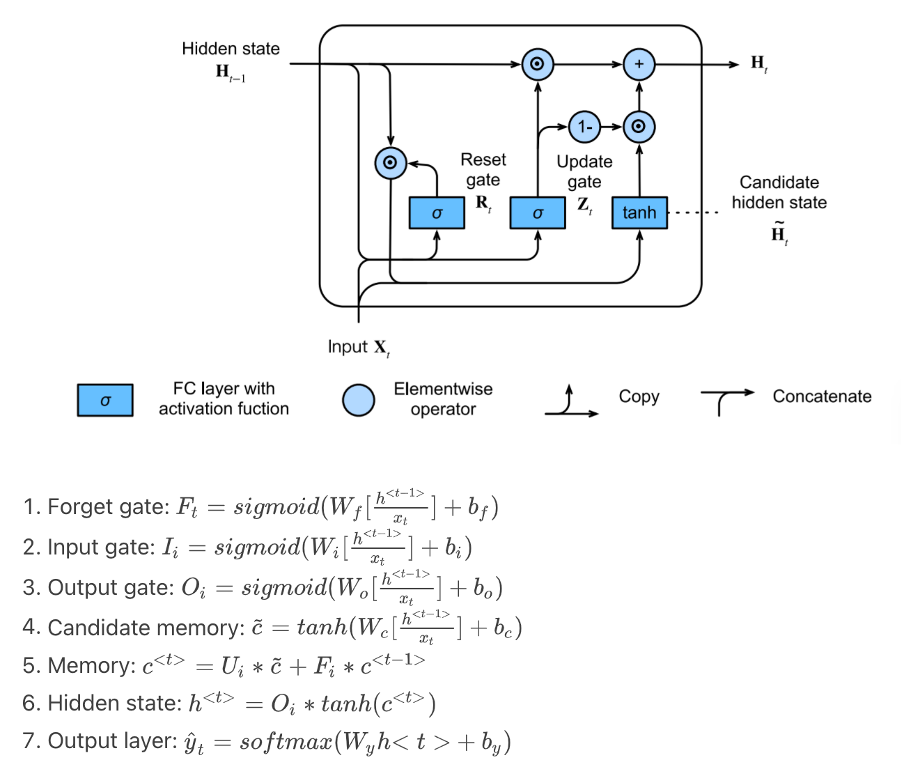

Layers
Contents
Layers#
BatchNorm#
BatchNorm accelerates convergence by reducing internal covariate shift inside each batch. If the individual observations in the batch are widely different, the gradient updates will be choppy and take longer to converge.
The batch norm layer normalizes the incoming activations and outputs a new batch where the mean equals 0 and standard deviation equals 1. It subtracts the mean and divides by the standard deviation of the batch.
Code
Code example from Agustinus Kristiadi
1def BatchNorm():
2 # From https://wiseodd.github.io/techblog/2016/07/04/batchnorm/
3 # TODO: Add doctring for variable names. Add momentum to init.
4 def __init__(self):
5 pass
6
7 def forward(self, X, gamma, beta):
8 mu = np.mean(X, axis=0)
9 var = np.var(X, axis=0)
10
11 X_norm = (X - mu) / np.sqrt(var + 1e-8)
12 out = gamma * X_norm + beta
13
14 cache = (X, X_norm, mu, var, gamma, beta)
15
16 return out, cache, mu, var
17
18 def backward(self, dout, cache):
19 X, X_norm, mu, var, gamma, beta = cache
20
21 N, D = X.shape
22
23 X_mu = X - mu
24 std_inv = 1. / np.sqrt(var + 1e-8)
25
26 dX_norm = dout * gamma
27 dvar = np.sum(dX_norm * X_mu, axis=0) * -.5 * std_inv**3
28 dmu = np.sum(dX_norm * -std_inv, axis=0) + dvar * np.mean(-2. * X_mu, axis=0)
29
30 dX = (dX_norm * std_inv) + (dvar * 2 * X_mu / N) + (dmu / N)
31 dgamma = np.sum(dout * X_norm, axis=0)
32 dbeta = np.sum(dout, axis=0)
33
34 return dX, dgamma, dbeta
Further reading
Convolution#
In CNN, a convolution is a linear operation that involves multiplication of weight (kernel/filter) with the input and it does most of the heavy lifting job.
Convolution layer consists of 2 major component 1. Kernel(Filter) 2. Stride
Kernel (Filter): A convolution layer can have more than one filter. The size of the filter should be smaller than the size of input dimension. It is intentional as it allows filter to be applied multiple times at difference point (position) on the input.Filters are helpful in understanding and identifying important features from given input. By applying different filters (more than one filter) on the same input helps in extracting different features from given input. Output from multiplying filter with the input gives Two dimensional array. As such, the output array from this operation is called “Feature Map”.
Stride: This property controls the movement of filter over input. when the value is set to 1, then filter moves 1 column at a time over input. When the value is set to 2 then the filer jump 2 columns at a time as filter moves over the input.
Code
1 # this code demonstate on how Convolution works
2 # Assume we have a image of 4 X 4 and a filter fo 2 X 2 and Stride = 1
3
4 def conv_filter_ouput(input_img_section,filter_value):
5 # this method perfromas the multiplication of input and filter
6 # returns singular value
7
8 value = 0
9 for i in range(len(filter_value)):
10 for j in range(len(filter_value[0])):
11 value = value + (input_img_section[i][j]*filter_value[i][j])
12 return value
13
14 img_input = [[260.745, 261.332, 112.27 , 262.351],
15 [260.302, 208.802, 139.05 , 230.709],
16 [261.775, 93.73 , 166.118, 122.847],
17 [259.56 , 232.038, 262.351, 228.937]]
18
19 filter = [[1,0],
20 [0,1]]
21
22 filterX,filterY = len(filter),len(filter[0])
23 filtered_result = []
24 for i in range(0,len(img_mx)-filterX+1):
25 clm = []
26 for j in range(0,len(img_mx[0])-filterY+1):
27 clm.append(conv_filter_ouput(img_mx[i:i+filterX,j:j+filterY],filter))
28 filtered_result.append(clm)
29
30 print(filtered_result)
Further reading
Dropout#
A dropout layer takes the output of the previous layer’s activations and randomly sets a certain fraction (dropout rate) of the activatons to 0, cancelling or ‘dropping’ them out.
It is a common regularization technique used to prevent overfitting in Neural Networks.
The dropout rate is the tunable hyperparameter that is adjusted to measure performance with different values. It is typically set between 0.2 and 0.5 (but may be arbitrarily set).
Dropout is only used during training; At test time, no activations are dropped, but scaled down by a factor of dropout rate. This is to account for more units being active during test time than training time.
For example:
A layer in a neural net outputs a tensor (matrix) A of shape (batch_size, num_features).
The dropout rate of the layer is set to 0.5 (50%).
A random 50% of the values in A will be set to 0.
These will then be multiplied with the weight matrix to form the inputs to the next layer.
The premise behind dropout is to introduce noise into a layer in order to disrupt any interdependent learning or coincidental patterns that may occur between units in the layer, that aren’t significant.
Code
1 # layer_output is a 2D numpy matrix of activations
2
3 layer_output *= np.random.randint(0, high=2, size=layer_output.shape) # dropping out values
4
5 # scaling up by dropout rate during TRAINING time, so no scaling needs to be done at test time
6 layer_output /= 0.5
7 # OR
8 layer_output *= 0.5 # Scaling down during TEST time.
- 2
This results in the following operation.
All reference, images and code examples, unless mentioned otherwise, are from section 4.4.3 of Deep Learning for Python by François Chollet.
- 2
Pooling#
Pooling layers often take convolution layers as input. A complicated dataset with many object will require a large number of filters, each responsible finding pattern in an image so the dimensionally of convolutional layer can get large. It will cause an increase of parameters, which can lead to over-fitting. Pooling layers are methods for reducing this high dimensionally. Just like the convolution layer, there is kernel size and stride. The size of the kernel is smaller than the feature map. For most of the cases the size of the kernel will be 2X2 and the stride of 2. There are mainly two types of pooling layers.
The first type is max pooling layer. Max pooling layer will take a stack of feature maps (convolution layer) as input. The value of the node in the max pooling layer is calculated by just the maximum of the pixels contained in the window.
The other type of pooling layer is the Average Pooling layer. Average pooling layer calculates the average of pixels contained in the window. Its not used often but you may see this used in applications for which smoothing an image is preferable.
Code
1def max_pooling(feature_map, size=2, stride=2):
2 """
3 :param feature_map: Feature matrix of shape (height, width, layers)
4 :param size: size of kernal
5 :param stride: movement speed of kernal
6 :return: max-pooled feature vector
7 """
8 pool_shape = (feature_map.shape[0]//stride, feature_map.shape[1]//stride, feature_map.shape[-1]) #shape of output
9 pool_out = numpy.zeros(pool_shape)
10 for layer in range(feature_map.shape[-1]):
11 #for each layer
12 row = 0
13 for r in numpy.arange(0,feature_map.shape[0], stride):
14 col = 0
15 for c in numpy.arange(0, feature_map.shape[1], stride):
16 pool_out[row, col, layer] = numpy.max([feature_map[c:c+size, r:r+size, layer]])
17 col = col + 1
18 row = row +1
19 return pool_out
{kind=link}
Fully-connected/Linear#
In a neural network, a fully-connected layer, also known as linear layer, is a type of layer where all the inputs from one layer are connected to every activation unit of the next layer. In most popular machine learning models, the last few layers in the network are fully-connected ones. Indeed, this type of layer performs the task of outputting a class prediction, based on the features learned in the previous layers.
{kind=link}
Example of a fully-connected layer, with four input nodes and eight output nodes. Source [4].#
The fully-connected layer receives in input a vector of nodes, activated in the previous convolutional layers. This vector passes through one or more dense layers, before being sent to the output layer. Before it reaches the output layer, an activation function is used for making a prediction. While the convolutional and pooling layers generally use a ReLU function, the fully-connected layer can use two types of activation functions, based on the type of the classification problem:
Sigmoid: A logistic function, used for binary classification problems.
Softmax: A more generalized logistic activation function, it ensures that the values in the output layer sum up to 1. Commonly used for multi-class classification.
The activation function outputs a vector whose dimension is equal to the number of classes to be predicted. The output vector yields a probability from 1 to 0 for each class.
RNN#
RNN (Recurrent Neural Network) is the neural network with hidden state, which captures the historical information up to current timestep. Because the hidden state of current state uses the same definition as that in previous timestep, which means the computation is recurrent, hence it is called recurrent neural network.(Ref 2)
The structure is as follows:
{kind=link}
Code
For detail code, refer to layers.py
1class RNN:
2 def __init__(self, input_dim: int, hidden_dim: int, output_dim: int, batch_size=1) -> None:
3 self.input_dim = input_dim
4 self.hidden_dim = hidden_dim
5 self.out_dim = output_dim
6 self.batch_size = batch_size
7 # initialization
8 self.params = self._init_params()
9 self.hidden_state = self._init_hidden_state()
10
11 def _init_params(self) -> List[np.array]:
12 scale = 0.01
13 Waa = np.random.normal(scale=scale, size=[self.hidden_dim, self.hidden_dim])
14 Wax = np.random.normal(scale=scale, size=[self.hidden_dim, self.input_dim])
15 Wy = np.random.normal(scale=scale, size=[self.out_dim, self.hidden_dim])
16 ba = np.zeros(shape=[self.hidden_dim, 1])
17 by = np.zeros(shape=[self.out_dim, 1])
18 return [Waa, Wax, Wy, ba, by]
19
20 def _init_hidden_state(self) -> np.array:
21 return np.zeros(shape=[self.hidden_dim, self.batch_size])
22
23 def forward(self, input_vector: np.array) -> np.array:
24 """
25 input_vector:
26 dimension: [num_steps, self.input_dim, self.batch_size]
27 out_vector:
28 dimension: [num_steps, self.output_dim, self.batch_size]
29 """
30 Waa, Wax, Wy, ba, by = self.params
31 output_vector = []
32 for vector in input_vector:
33 self.hidden_state = np.tanh(
34 np.dot(Waa, self.hidden_state) + np.dot(Wax, vector) + ba
35 )
36 y = softmax(
37 np.dot(Wy, self.hidden_state) + by
38 )
39 output_vector.append(y)
40 return np.array(output_vector)
41
42if __name__ == "__main__":
43 input_data = np.array([
44 [
45 [1, 3]
46 , [2, 4]
47 , [3, 6]
48 ]
49 , [
50 [4, 3]
51 , [3, 4]
52 , [1, 5]
53 ]
54 ])
55 batch_size = 2
56 input_dim = 3
57 output_dim = 4
58 hidden_dim = 5
59 time_step = 2
60 rnn = RNN(input_dim=input_dim, batch_size=batch_size, output_dim=output_dim, hidden_dim=hidden_dim)
61 output_vector = rnn.forward(input_vector=input_data)
62 print("RNN:")
63 print(f"Input data dimensions: {input_data.shape}")
64 print(f"Output data dimensions {output_vector.shape}")
65 ## We will get the following output:
66 ## RNN:
67 ## Input data dimensions: (2, 3, 2)
68 ## Output data dimensions (2, 4, 2)
GRU#
GRU (Gated Recurrent Unit) supports the gating of hidden state:
Reset gate controls how much of previous hidden state we might still want to remember
Update gate controls how much of current hidden state is just a copy of previous state
The structure and math are as follow:
{kind=link}
Code
For detail code, refer to layers.py
1class GRU:
2 def __init__(self, input_dim: int, hidden_dim: int, output_dim: int, batch_size=1) -> None:
3 self.input_dim = input_dim
4 self.hidden_dim = hidden_dim
5 self.out_dim = output_dim
6 self.batch_size = batch_size
7 # initialization
8 self.params = self._init_params()
9 self.hidden_state = self._init_hidden_state()
10
11 def _init_params(self) -> List[np.array]:
12 scale = 0.01
13 def param_single_layer():
14 w = np.random.normal(scale=scale, size=(self.hidden_dim, self.hidden_dim+input_dim))
15 b = np.zeros(shape=[self.hidden_dim, 1])
16 return w, b
17
18 # reset, update gate
19 Wr, br = param_single_layer()
20 Wu, bu = param_single_layer()
21 # output layer
22 Wy = np.random.normal(scale=scale, size=[self.out_dim, self.hidden_dim])
23 by = np.zeros(shape=[self.out_dim, 1])
24 return [Wr, br, Wu, bu, Wy, by]
25
26 def _init_hidden_state(self) -> np.array:
27 return np.zeros(shape=[self.hidden_dim, self.batch_size])
28
29 def forward(self, input_vector: np.array) -> np.array:
30 """
31 input_vector:
32 dimension: [num_steps, self.input_dim, self.batch_size]
33 out_vector:
34 dimension: [num_steps, self.output_dim, self.batch_size]
35 """
36 Wr, br, Wu, bu, Wy, by = self.params
37 output_vector = []
38 for vector in input_vector:
39 # expit in scipy is sigmoid function
40 reset_gate = expit(
41 np.dot(Wr, np.concatenate([self.hidden_state, vector], axis=0)) + br
42 )
43 update_gate = expit(
44 np.dot(Wu, np.concatenate([self.hidden_state, vector], axis=0)) + bu
45 )
46 candidate_hidden = np.tanh(
47 reset_gate * self.hidden_state
48 )
49 self.hidden_state = update_gate * self.hidden_state + (1-update_gate) * candidate_hidden
50 y = softmax(
51 np.dot(Wy, self.hidden_state) + by
52 )
53 output_vector.append(y)
54 return np.array(output_vector)
LSTM#
In order to address the long-term information preservation and shor-term skipping in latent variable model, we introduced LSTM. In LSTM, we introduce the memory cell that has the same shape as the hidden state, which is actually a fancy version of a hidden state, engineered to record additional information.
The structure and math are as follow:
{kind=link}
Code
For detail code, refer to layers.py
1class LSTM:
2 def __init__(self, input_dim: int, hidden_dim: int, output_dim: int, batch_size=1) -> None:
3 self.input_dim = input_dim
4 self.hidden_dim = hidden_dim
5 self.out_dim = output_dim
6 self.batch_size = batch_size
7 # initialization
8 self.params = self._init_params()
9 self.hidden_state = self._init_hidden_state()
10 self.memory_state = self._init_hidden_state()
11
12 def _init_params(self) -> List[np.array]:
13 scale = 0.01
14 def param_single_layer():
15 w = np.random.normal(scale=scale, size=(self.hidden_dim, self.hidden_dim+input_dim))
16 b = np.zeros(shape=[self.hidden_dim, 1])
17 return w, b
18
19 # forget, input, output gate + candidate memory state
20 Wf, bf = param_single_layer()
21 Wi, bi = param_single_layer()
22 Wo, bo = param_single_layer()
23 Wc, bc = param_single_layer()
24 # output layer
25 Wy = np.random.normal(scale=scale, size=[self.out_dim, self.hidden_dim])
26 by = np.zeros(shape=[self.out_dim, 1])
27 return [Wf, bf, Wi, bi, Wo, bo, Wc, bc, Wy, by]
28
29 def _init_hidden_state(self) -> np.array:
30 return np.zeros(shape=[self.hidden_dim, self.batch_size])
31
32 def forward(self, input_vector: np.array) -> np.array:
33 """
34 input_vector:
35 dimension: [num_steps, self.input_dim, self.batch_size]
36 out_vector:
37 dimension: [num_steps, self.output_dim, self.batch_size]
38 """
39 Wf, bf, Wi, bi, Wo, bo, Wc, bc, Wy, by = self.params
40 output_vector = []
41 for vector in input_vector:
42 # expit in scipy is sigmoid function
43 foget_gate = expit(
44 np.dot(Wf, np.concatenate([self.hidden_state, vector], axis=0)) + bf
45 )
46 input_gate = expit(
47 np.dot(Wi, np.concatenate([self.hidden_state, vector], axis=0)) + bi
48 )
49 output_gate = expit(
50 np.dot(Wo, np.concatenate([self.hidden_state, vector], axis=0)) + bo
51 )
52 candidate_memory = np.tanh(
53 np.dot(Wc, np.concatenate([self.hidden_state, vector], axis=0)) + bc
54 )
55 self.memory_state = foget_gate * self.memory_state + input_gate * candidate_memory
56 self.hidden_state = output_gate * np.tanh(self.memory_state)
57 y = softmax(
58 np.dot(Wy, self.hidden_state) + by
59 )
60 output_vector.append(y)
61 return np.array(output_vector)
References
- 1
- 2
“4.4.3, Fundamentals of Machine Learning: Adding Dropout.” Deep Learning for Python, by Chollet, François. Manning Publications Co., 2018, pp. 109–110.
- 3
`Dive into Deep Learning https://d2l.ai/index.html`_, by Zhang, Aston and Lipton, Zachary C. and Li, Mu and Smola, Alexander J.
- 4